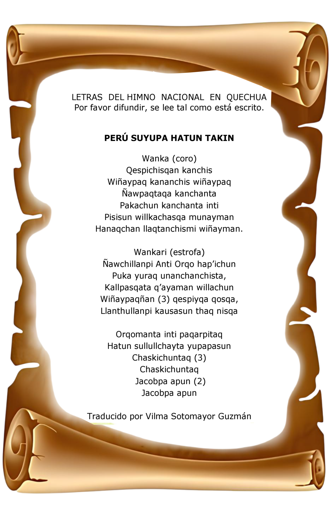

Volver
Volver
Comunicado Semanal - Agosto
Publicado: 4 de agosto, 2025Aprender el Himno Nacional en Quechua
Las estudiantes deben aprender a cantar el Himno Nacional del Perú en quechua. 😎

Himno Nacional en Quechua (Letra)